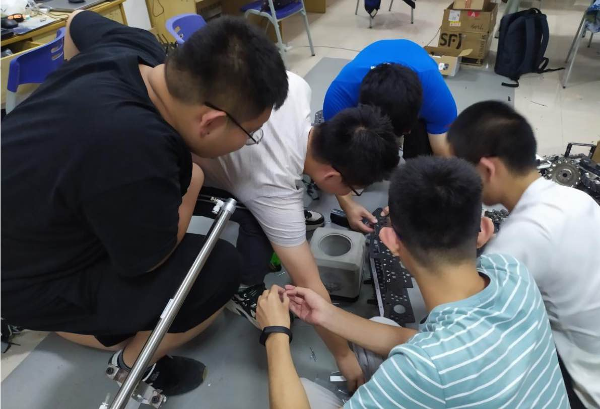

视觉组简介
说到视觉组,可能很多同学想到的是这个

但其实我们做的不是视觉设计,而是这个--计算机视觉
如果看过比赛介绍应该知道,robomaster 是一个通过发射弹丸与敌方进行对抗的比赛.要想 击败对手,除了优秀的机器人性能和出色的战术,至关重要的一个方面就是打击的精确度了. 单纯依靠操作手的操作是很难击中一台快速移动的机器人的,这时候就需要一些自动化的辅助操作. 通过安装在机器人上的摄像头与 PC,我们基于计算机视觉可以实现自动锁定敌方单位,操作 手只需按住右键即可一键锁头.如上图所示,通过对摄像头获取到对图像对一系列处理,可以 找到敌方机器人的装甲板位置,对此位置进行解算和预测,即可实现对目标的瞄准跟踪.在此 之上还可以实现更加高级的功能,比如对于敌方运动方式进行建模、不同机器人之间对敌方 位置的共享等.
我们平时做的主要是编写代码逻辑
在机器人上调试
协调其他组的同学一起调试也是很重要的
